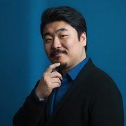

유영준
경영전환연구소 통 소장
01소개
일과 사람을 잇는 일을 합니다.
중소기업의 문제는 사람의 능력보다 경영의 구조에서 시작되는 경우가 많아, 사람을 바꾸기보다 구조를 먼저 봅니다.
대표 중심의 운영을 시스템 중심의 경영으로 바꾸고 전략을 실행으로 잇는 일을 "경영전환"이라는 관점으로 연구하고 설계합니다.
좋은 기업은 사람이 열심히 일하는 기업이 아니라 구조가 일하는 기업이라고 믿습니다.
02전문 분야
03활동
- 경영전환연구소 통 소장
- 코리아경영자문(KBMC) 전략파트장
04연구와 저작
- 경영전환론 — ABCDE 전환 사이클, 人營財産 4축, 오약(五若)·사도(四度) 체계
- 경영 자가진단 16종 설계 (조직유형 16, 리더 유형, 영업 신호등, 대표 의존도 등)
- 연재 — 인사만사, 비즈니스 삼십육계, 경영전환 생각창고, 고전 경영 인사이트
05공식 채널
06사례
실명을 공개할 수 없는 일이 대부분이라, 회사와 사람을 보호하기 위해 익명화·재구성한 사례로 소개합니다. 경영전환 이야기의 재구성 사례 보기 →
07상담
아직 어떤 방식이 필요한지 정하지 않으셔도 됩니다.
지금 상황을 듣고 필요한 것부터 함께 정리합니다.